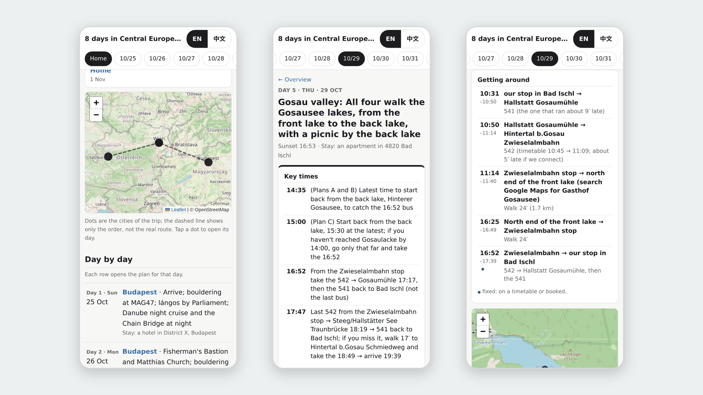

先问必须项Ask what is a must
排计划前问有没有必须去的地方或必须守的时间。没提就当没有；普通选择可以带理由调整。Before planning, ask about must-go places or fixed times. If none are named, assume none. Other choices may change with a reason.
tripwright 是旅行规划服务，通过 MCP 连接协议供 AI 助手调用。它取出这次该考虑的偏好与决定，给出有来源的交通事实，记录计划为什么改变。由你选择的 AI 助手组织回答。
tripwright is a trip-planning service for AI assistants over the Model Context Protocol (MCP). It brings relevant preferences and decisions into each turn, supplies sourced transport facts, and records what changed and why. Your chosen AI assistant writes the answer.

几个 agent 跑在你的 App 里。服务保管行程，每条消息返回眼下适用的内容，并点名下一步交给谁。Your app runs the agents. The service keeps the trip, returns what applies to each message, and names who does the next step.
turn，写回答，提出并提交计划的改动。Calls turn first for every message, writes the answer, proposes and commits plan changes.点名写在每次 turn 返回的 flow.dispatch 里，不靠 App 的钩子。三个帮手在 Claude Code 和 Codex 里是子代理；在普通聊天里，一个 agent 自己做这几步。The name comes in flow.dispatch, returned by every turn; no app hook is needed. The three helpers are sub-agents in Claude Code and Codex; in a plain chat, one agent does their steps itself.
“咖啡不去了，改去公园散步。”turn 一字不改地存下。“Skip the café, a walk in the park instead.” turn stores it word for word.
记成要求、偏好或事实，每条带着它出自哪句话。计划后来没改成，这些也不丢。As a requirement, preference or fact, each with the sentence it came from. They stay even if the plan change is held back.
新决定靠哪条旧决定成立，就连上它。A new decision is linked to the earlier one it rests on. 自动测试覆盖Automated tests
旧记录被取代或过期时，靠它成立的决定列出来复查。When a record is replaced or expires, the decisions that rested on it are listed for review. 自动测试覆盖Automated tests
propose：只交改过的那一天，不重发整趟行程。propose: only the changed day, never the whole trip again.
撞上必须项、已订的票或固定的时刻：不存。回答里说这次没改成，并问你怎么办。A conflict with a must, a booked ticket or a fixed time: nothing is saved. The answer says the change did not go through, and asks you.
改动带进了没核的外部事实（比如那个钟点店开不开）：照你选的模式。谨慎（默认）：先不存，回答里说哪件没核，给至多三个选项，各带后果、标出推荐和不回按哪个，等你的下一条消息到了才存；主动：当场存，回答里说哪件没核、怎样撤回。存下时都标明没核。If the change brings in an outside fact that is not checked (is the place open at that hour?), your chosen mode decides. Cautious (the default): not saved yet; the answer says what is unchecked and gives up to three options, each with its consequence, the one recommended and what happens without an answer; it is saved once your next message has arrived. Proactive: saved at once; the answer says what is unchecked and how to undo it. Either way it is saved marked unchecked.
commit：新版本记下改了什么、谁改的、为什么。旧版本上算出的结果不能覆盖它。commit: a new version records what changed, who changed it and why. A result computed on an older version cannot overwrite it.
01、02、05—08 在 2026-11-12 用真实模型跑过；03、04 由自动测试覆盖。Steps 01, 02 and 05–08 were run with real models on 2026-11-12; steps 03 and 04 are covered by automated tests.
query 查过之后Second part · after the main agent's query回答结构示意。在聊天 App 里，第二段在你回一句“继续”之后来。A structure illustration. In a chat app, the second part comes after you reply “continue”.
query 查存下的资料Main agent · query over the saved material回答结构示意。真要把它排进某一天，走上面的 05—08。A structure illustration. Putting the place into a day follows steps 05–08 above.
排计划前问有没有必须去的地方或必须守的时间。没提就当没有；普通选择可以带理由调整。Before planning, ask about must-go places or fixed times. If none are named, assume none. Other choices may change with a reason.
改了你先前的选择，就说原来是什么、现在改成什么、为什么。被拒绝的改动不会说成已完成。When revising your choice, say what it was, what it becomes and why. A rejected edit is not reported as done.
程序每问都返回眼下适用的记忆与下一步指引，由宿主模型照着答。With every message the service returns the memories that apply and the next step; the host model answers with them.
覆盖范围内的车次、目的地和按时刻表的换乘，逐程给出；天气有预报来源。营业规则可从保存的资料或宿主读到的官方页面核查。Departures, destinations and timetable transfers within coverage, leg by leg; weather with its forecast source. Opening rules can be checked against saved material or official pages the host reads.
晚点、站台、临时停运、余位或预约库存没有完整实时保证。工具会在能提供查法时给出操作；需要问人时，先邀请起草，用户要了再给英语与当地语言。Delays, platforms, disruptions, availability and booking inventory have no complete live guarantee. Where possible, tools supply checking steps. Inquiry drafts wait for your request and include English and the local language.
真实来源：Live providers: Transitous · © OpenStreetMap contributors · Open-Meteo (CC BY 4.0).
Transitous 路线请求默认最多 720 次／滚动 24 小时，公共 API 条款另行适用。Wiener Linien、VAO 额外实时适配器尚未接入；VAO 如需接入，要用户本人确认合同并申请凭据。Transitous route requests default to 720 per rolling 24 hours, subject to its public API terms. Extra Wiener Linien and VAO adapters are not implemented. VAO access would require the user to arrange a contract and credentials.
没有公共服务，也不开放注册：每人自己部署一份，只给自己用。
There is no public service and no signup. Each person runs their own copy, for themselves.
https://<你的域名>/mcp/<密钥>。这个地址就是登录凭据，拿到它的人能读写你的行程。https://<your-host>/mcp/<key>. This address is your login: anyone who has it can read and change your trips.第一次部署，把仓内的 deploy/SETUP.md 交给你的编码 agent（Claude Code、Codex 等）照做。各客户端的步骤在 deploy/CLIENTS.md。
For the first deployment, give deploy/SETUP.md to your coding agent (Claude Code, Codex or similar) and let it follow the steps. The steps for each client are in deploy/CLIENTS.md.
在网页上添加自定义连接器，填你的地址，认证选不登录：网址密钥不需要 OAuth。网页上加好的连接器，手机 App 也能用。免费账号只能加一个自定义连接器。
Add a custom connector on the web with your address, and choose no sign-in: the secret key needs no OAuth. A connector added on the web also works in the mobile app. Free accounts can add only one custom connector.
自定义 MCP 只能在网页版添加。免费版加成了：ChatGPT 列出七个工具，会写入的跑过，每次运行前都问一次。OpenAI 的文档写 Pro 账号只能用只读工具（没测）：tripwright 只有 state、explain 是只读的，那样就只能读行程。
You can add a custom MCP server on the web only. It worked on the Free plan: ChatGPT listed the seven tools and ran the ones that write, asking before each. OpenAI's documentation says Pro accounts can use only read-only tools (not tested): in tripwright only state and explain are read-only, so that would allow reading the trip only.
本机用 stdio；远程用 claude mcp add --transport http 加你的地址。云端会话默认连不到交通数据来源，用 Claude 账号里加的连接器可以绕开。
Use local stdio, or add your address with claude mcp add --transport http. Cloud sessions cannot reach the transport sources by default; a connector added to your Claude account works around this.
本机 CLI、桌面 App 和 IDE 插件都用 codex mcp add tripwright --url "<地址>"。查交通的 query 要先批准，也可以在配置里设成自动批准。codex mcp list 会打印完整地址，别在共享屏幕上跑。
The local CLI, desktop app and IDE extension all use codex mcp add tripwright --url "<address>". The transport tool query needs approval first, or you can set automatic approval in the config. codex mcp list prints the full address, so do not run it on a shared screen.
其他 MCP 客户端要支持远程 Streamable HTTP。各家的限制按 2026-11-02 的官方文档写。Claude 网页（Ultra 套餐，Fable 5.2）与 ChatGPT 网页（免费版）各测了 1 次三句话的对话（2026-11-12，虚构行程）。Claude 另经 Claude API 的 MCP 连接器测过：和自定义连接器一样由 Anthropic 的云端来连，Sonnet 5.5 与 Opus 5.5，中英文十种对话（2026-11-12）。Other MCP clients need remote Streamable HTTP support. Client limits follow the official documentation as of 2026-11-02. Claude on the web (Ultra plan, Fable 5.2) and ChatGPT on the web (Free plan) each ran one conversation of three messages (2026-11-12, a fictional trip). Claude was also tested through the Claude API's MCP connector, which connects from Anthropic's cloud as a custom connector does: Sonnet 5.5 and Opus 5.5, ten conversations in English and Chinese (2026-11-12).
在 Claude Code、Codex 里，服务每一步点名该派的帮手：需求整理员转写截图、整理要求（由主 agent 存下），查证员核事实，核对员在改过的计划存下之前核一遍。In Claude Code and Codex the service names the helper each step needs: a requirements agent transcribes screenshots and writes up requirements (the main agent saves them), a researcher checks facts, a verifier checks a changed plan before it is saved.
聊天里一个 agent 什么都做：核过的回答在你回一句“继续”之后来；服务每条消息都把适用的要求带回去。One agent does everything: the checked answer comes after you reply “continue”, and the service sends back the requirements that apply with every message.
两家每条消息约 20 张，聊天不收 zip。张数多就存进一个文件夹，交给 Claude Code 或 Codex。About 20 images per message in both apps, and chats do not take ZIP. For more, put them in a folder for Claude Code or Codex.
2026 年 10 月 25 日至 11 月 1 日，布达佩斯、维也纳与萨尔茨卡默古特，4 人。人名都换成了代号。Budapest, Vienna and the Salzkammergut, 25 October to 1 November 2026, four people. All names are replaced with codes.
从代码仓根目录运行，需要 Python 3.11+ 和 uv。demo 用临时库与虚构数据；stdio 命令供本机 MCP 宿主启动。
From the code repository root, use Python 3.11+ and uv. The demo uses a temporary database and fictional data; the stdio command starts a server for a local MCP host.
uv sync --extra dev
uv run tripwright demo
uv run tripwright serve --stdioMCP 真实查询需在启动时设置 TRIPWRIGHT_PROVIDERS=live；未设置时是 synthetic。虚构数据不能用于真实出行。For real MCP lookups, set TRIPWRIGHT_PROVIDERS=live at startup; otherwise they are synthetic. Fictional data cannot guide real travel.
把仓内的 deploy/SETUP.md 交给你的编码 agent 照做：它用 Docker 或 Railway 起服务、连行程仓，最后把连接器地址交给你。三步总览见怎样连接。
Give deploy/SETUP.md in the repository to your coding agent and let it follow the steps. It starts the service with Docker or on Railway, connects the trip repository, and gives you the connector address. For the three steps, see Connect.
仓库模式将行程、账本和版本写回你配置的 Git 仓；服务器保留镜像与运行库。本机也可仅用 SQLite。宿主 app、Git 托管方与部署者各有自己的数据处理范围。
Repository mode writes trips, records and versions to your configured Git repository; the server retains a mirror and runtime database. Local mode can use SQLite alone. The host app, Git provider and operator each have their own data practices.
不要公开令牌、私钥和未处理的个人行程。当前没有对全部运行日志的正文脱敏保证；部署者需要限制访问与日志内容。
Keep tokens, private keys and unreviewed personal itineraries out of public files. There is no complete body-redaction guarantee across runtime logs; operators must control access and logging.
为什么要在每次回答前取出记忆 →Why each answer needs to read its memories →